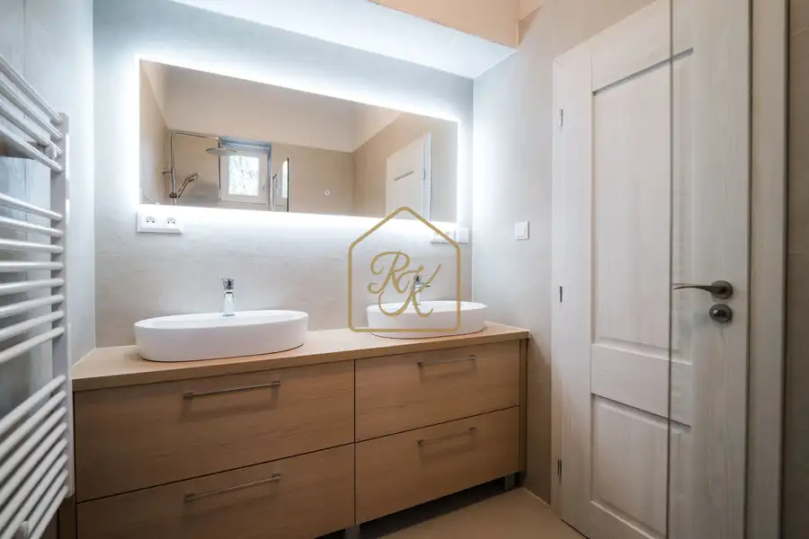
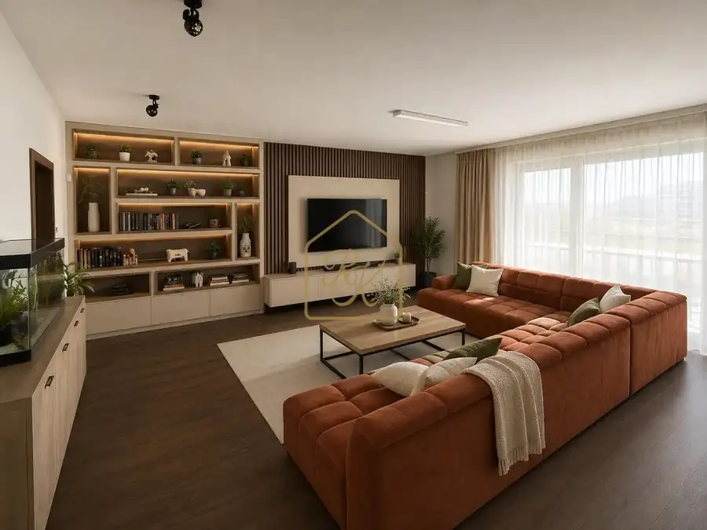

Predaj 1-i investičného bytu v centre Nitry s nájomníkom
Nitra
- Dispozícia1-izbový
- Plocha35 m²
- Poschodie2.
- StavČiastočná rekonštrukcia
- VlastníctvoOsobné
O nehnuteľnosti
INVESTIČNÝ 1-IZBOVÝ BYT V CENTRE NITRY – PRENAJATÝ S PRAVIDELNÝM PRÍJMOM35 m² | VEĽKÝ BALKÓN | PIVNICA | NÁJOMNÍK | 550 € MESAČNEHľadáte investičný byt, ktorý nemusíte najskôr pripravovať na prenájom a následne hľadať nájomníka?Ponúkame na predaj 1-izbový byt v centre Nitry, ktorý je už v súčasnosti prenajatý.👉 Kupujete nehnuteľnosť s existujúcim nájomníkom a pravidelným mesačným príjmom.INVESTÍCIA V ČÍSLACHPredajná cena: 130 000 €Nájomné: 550 € / mesiacNáklady na byt vrátane energií a správy: cca 100 € / mesiacRozdiel po uvedených nákladoch: cca 450 € / mesiacRočne: cca 5 400 €Orientačný výnos po uvedených prevádzkových nákladoch: cca 4,15 % ročne🏡 O BYTE✔ výmera 35 m²✔ veľký balkón✔ pivnica✔ centrum Nitry✔ byt je prenajatý nájomníkovi✔ vhodný ako dlhodobá investícia📍 POLOHA, KTORÁ JE PRI PRENÁJME VEĽKOU VÝHODOUByt sa nachádza vo výbornej lokalite v blízkosti:🚆 železničnej stanice🚌 autobusovej stanice🛒 obchodov a služieb🏫 škôl🏙️ centra mestaVýborná dostupnosť zvyšuje atraktivitu bytu pre ľudí pracujúcich v Nitre, študentov aj nájomníkov, ktorí pravidelne cestujú.💶 CENA: 130 000 €Investičný byt, pri ktorom nemusíte začínať od nuly.Nájomník už býva, nájomné sa platí a nový majiteľ môže plynulo pokračovať v prenájme.Platba možná iba v hotovosti.📞 Máte záujem o obhliadku alebo podrobnejšie informácie o investícii? Kontaktujte ma.RK Renáta KolenčíkováMgr. Renáta Kolenčíková📱 +421 905 267 754📧 kolencikovar@gmail.com🌐 renatakolencikova.com
Parametre
| Cena vrátane energií | Nie |
|---|---|
| Druh | 1 izbový byt |
| Dátum zverejnenia | 6. 10. 2026 |
| Energetická náročnosť | Nízkoenergetický |
| Podlažie | 2 |
| Počet balkónov | 1 |
| Počet izieb / miestností | 1 |
| Počet pivníc | 1 |
| Stav nehnuteľnosti | Čiastočná rekonštrukcia |
| Telekomunikácie | Internet, Iné |
| Typ | Predaj |
| Vlastníctvo | Osobné |
| Vybavenie | Balkón, Pivnica, Výťah |
| Vykurovanie | Ústredné |
| Úžitková plocha | 35 m² |
Kde to je


Mohlo by Vás zaujímať

BytNové10 239 000 €Krásny 3i byt,100 m2,kompletná rekonšt.,parkovanie, záhradka Nitra 3-izbový100 m²1. podlažie VÝNIMOČNÝ 3-IZBOVÝ BYT V TEHLOVOM DOME – ŠIRŠIE CENTRUM NITRY82,93 m² BYT + 17,40 m² PIVNICA | SÚKROMNÁ ZELEŇ | PARKOVANIE ZA BRÁNOU | PODLAHOVÉ…
BytNové10 Cena dohodouLuxusný 5-i byt 245 m², s terasou a s vírivkou v srdci Nitry Nitra 245 m²3. podlažie ORBIS PREMIUM – LUXUSNÝ 5-IZBOVÝ BYT S 92 m² TERASOU A VÍRIVKOU V SRDCI NITRY153 m² BYT | 92 m² TERASA | VÍRIVKA | 2× GARÁŽOVÉ STÁTIE | ZARIADENÝ |…